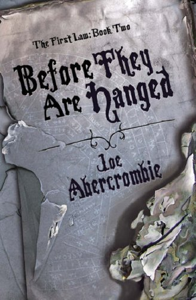

"Before They Are Hanged"
- Read on 2023-04-20
- Rating: ️️️️️
- Format: 🎧 (22 hours 39 minutes)
This picked right up where the first book left off. This wouldn't be a good book to read without reading the first. Regardless, with two potential battlefronts, and unrest in the homeland, stakes are raised in the three main storylines. It's certainly engaging, and I'm looking forward to reading the third/final in the series. The story is told in a graphic nature, from the hand-to-hand combat, to the couple easily-skipped intimate scenes, and the sights, sounds, and smells of so many scenes. I'm not a fan of descriptive intimate scenes, and the I tend to get lost in some of the detail of the combat. But to the author's credit, this is a richly developed world, and fills my imagination.